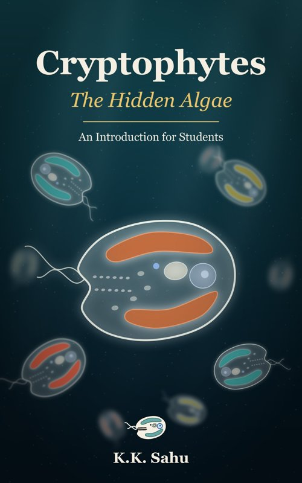

Cryptophytes: The Hidden Algae
An Introduction for Students
by K.K. Sahu
This is the companion website of the book. Registered readers can read full model answers to every question in the book, free of charge.
What the model answers contain
- Multiple choice questions: the correct answer to every MCQ, with a short reason and the section of the book where it is explained.
- Short answer questions: answers of about 60–120 words, written as a student should write them in an examination.
- Long answer questions: model essays with headings, tables, the diagram to draw, and a conclusion.
- Chapter 11 (Practical work): answers to the viva-voce questions, the expected results of Exercise 9 (exploring a cryptophyte genome), and worked examples for counting cells and calculating doubling time.
How to get access (free)
- Click Open the model answers.
- Sign in with your Google account, or create an account with your e-mail address and a password (you will be asked to confirm your e-mail address).
- Fill in a short registration form once (name, college, city and where you obtained the book).
- All chapters open immediately. You can sign in again at any time on any device.
Your details are used only for this book (for example, to tell you about corrections and new editions) and are never shared with anyone.
Corrections and updates
Corrections found after printing will be listed here. If you notice a mistake in the book, please write to the author at the e-mail address given on the copyright page of the book.
No corrections have been listed yet.
Also by the author
Bioinformatics for Every Biologist: Start Modern Research from Home with Free Tools and AI (forthcoming). Learn, step by step, how to find DNA and protein data, run BLAST, build phylogenetic trees and carry out a small research project from home with free tools. Written for biology students and teachers with no background in computing.
Free practice files: github.com/sahukk/bioinformatics-for-every-biologist